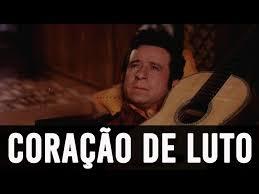

O maior golpe do mundo
Que eu tive na minha vida
Foi quando com nove anos
Perdi minha mãe querida
Morreu queimada no fogo
Morte triste e dolorida
Que fez a minha mãezinha
Dar o adeus da despedida
Vinha vindo da escola
Quando de longe avistei
O rancho que nós morava
Cheio de gente encontrei
Antes que alguém me dissesse
Eu logo imaginei
Que o causo era de morte
Da mãezinha que eu amei
Seguiu num carro de boi
Aquele preto caixão
Ao lado eu ia chorando
A triste separação
Ao chegar no campo santo
Foi maior a exclamação
Taparam com terra fria
Minha mãe do coração
Dali eu saí chorando
Por mão de estranho levado
Mas não levou nem dois meses
No mundo fui atirado
Com a morte da minha mãe
Fiquei desorientado
Com nove anos apenas
Por este mundo jogado
Passei fome e passei frio
Por este mundo perdido
Quando mamãe era viva
Me disse: Filho querido
Pra não roubar, não matar
Não ferir, não ser ferido
Descanse em paz, minha mãe
Eu cumprirei seu pedido
O que me resta na mente
Minha mãezinha é teu vulto
Recebas uma oração
Deste filho que é teu fruto
Que dentro do peito traz
O seu sentimento oculto
Desde nove anos tenho
O meu coração de luto
